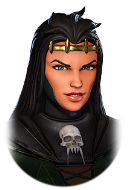
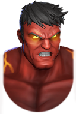
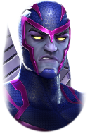
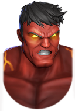
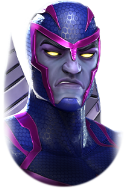
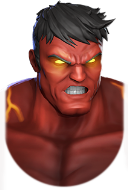
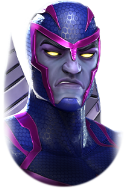
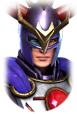
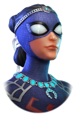

 



Les Cavaliers se débloquent dans leurs événements respectifs.


Ne montez aucun des personnages requis pour débloquer les cavaliers. Vous pouvez maximiser les recompenses en mettant la difficulté au maximum et tous les fléaux actifs. Une équipe récente palier 16 peut souvent faire l'affaire donc ne perdez pas votre temps avec les équipes requises.
Une fois les cavaliers débloqués, vous en aurez besoin pour débloquer Apocalypse ainsi que des personnages Mutants, Mystiques et Biotechniques et 3 MSF Originaux le tout palier 17.
Je vous conseille les 3 MSF Originaux suivants :



Pour le reste des personnages prennez juste les personnages de raid ça fera largement l'affaire.